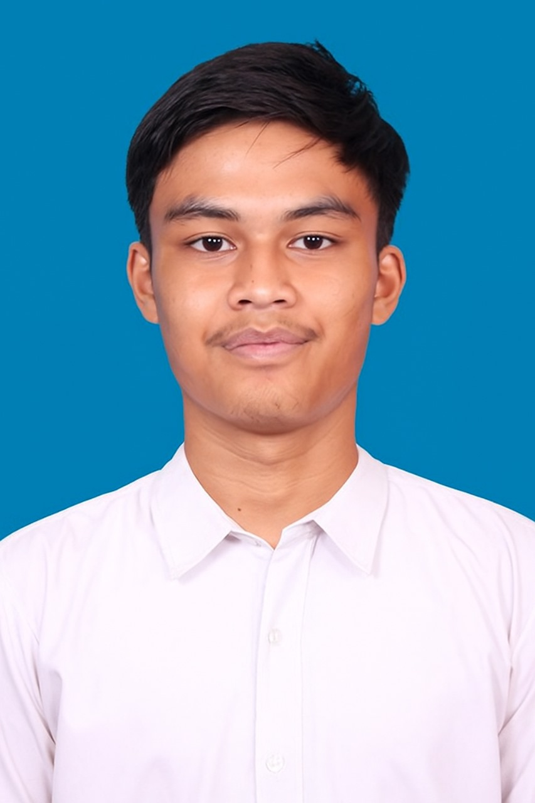

Artificial Intelligence Engineering Student
📍 Surabaya, Indonesia 60111
📞 +62 852 1500 8010
📧 seif442006@gmail.com
Results-oriented individual who combines academic excellence with a strong foundation built through active involvement in competitions and organizations. Passionate about the latest technology trends, with a proactive and adaptable mindset.
Deep Learning for Eye Health Classification: Developed a deep learning-based AI model to classify eye health conditions using image data.
Shortest Path for Pizza Delivery: Designed and implemented an AI-based shortest path algorithm to optimize delivery routes.
Develop mechanical designs and create detailed 3D models and technical drawings. Build and test prototypes to evaluate performance.
Assisted in the planning and execution of sports events, including event setup and participant coordination.
Artificial Intelligence Engineering (S1)
High School Diploma
I aspire to become a professional AI Engineer and UAV Specialist, focusing on the synergy between computer vision and autonomous flight systems. My goal is to leverage artificial intelligence to solve complex industrial problems through precise aerial monitoring and data analysis.
Planned Project: AI Palm Oil Web App
I am currently developing an AI-integrated web application designed for the agricultural sector. The application will enable users to: